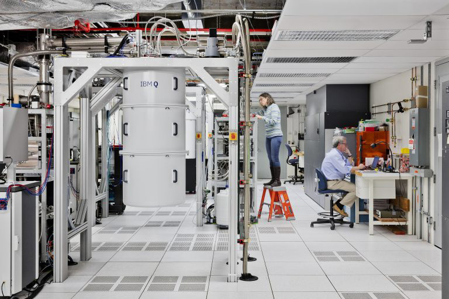

Quantum computing has crossed the line from a research curiosity into an industry that hires. A decade ago, the only people working on quantum machines were physics PhDs inside a handful of corporate and university labs. Today the field employs software engineers, hardware engineers, applications scientists, technical writers, product managers, and educators, and it is hiring faster than the talent pipeline can fill the openings. This chapter is for the reader who is wondering whether there is a place for them in this field, and if so, how to get there.
The honest summary is encouraging. The global quantum workforce is small, estimated at roughly 30,000 people, while industry forecasts project on the order of 250,000 roles by 2030 [1]. For every qualified candidate there are several open positions, which is an unusual and favorable situation for anyone entering a technical field. You do not need to be a theoretical physicist. You need curiosity, a willingness to learn in public, and one or two transferable skills that the field is short on.
Ask anyone who hires into quantum what the single most important attribute is, and the answer is rarely a specific credential. It is curiosity, paired with the confidence to ask questions and ask for help. Quantum is a young field where the textbooks are still being written and the hardware changes every year. Nobody walks in already knowing everything, including the people who have been in it the longest. The engineers who thrive are the ones who stay comfortable not knowing, who chase down the gap in their understanding, and who are not too proud to ask a colleague for help.
That said, curiosity goes further when it sits on top of real skills. The field needs several distinct kinds of knowledge, and you do not need all of them.
Software and algorithms. The largest single category of quantum jobs today is software, not hardware. Writing quantum programs, building the compilers and simulators that translate those programs to hardware, developing error-mitigation routines, and creating the developer tools that everyone else uses. The dominant skills here are ordinary software engineering (Python above all, plus C++ for performance-critical layers), linear algebra, and a working understanding of the quantum circuit model. You can learn the quantum part on top of a solid classical software foundation.
Applications and domain science. Quantum computers earn their keep by solving real problems in chemistry, materials science, optimization, finance, logistics, and machine learning. This work is done by people who understand both a problem domain and enough quantum to map the problem onto a quantum algorithm. A computational chemist who learns quantum, or a quant from a trading desk who learns quantum, is often more valuable than a quantum specialist who knows no chemistry or finance.
Hardware and engineering. Building the machines themselves draws on electrical engineering, microwave and RF engineering, cryogenics, optics, materials science, and control systems. This is where the physics PhDs concentrate, but it is far from exclusively their territory. RF and microwave engineers, controls engineers, and cryogenic technicians all have a direct path in, because qubit control hardware is, at bottom, precision electronics operating at extreme conditions.
Theory. A smaller category, but the one most people picture: developing new algorithms, proving complexity results, designing error-correcting codes. This is largely the domain of physics, mathematics, and computer science PhDs.
Everything around the technology. Quantum companies also need technical writers, educators, community managers, product managers, sales engineers, and standards and policy specialists. As the field commercializes, these roles multiply. They reward people who understand the technology well enough to translate it, without needing to invent it.
The practical implication is that most people enter quantum sideways, by bringing an existing strength (software, RF engineering, chemistry, a teaching gift) and layering quantum knowledge on top, rather than starting from scratch with a quantum degree. The barrier to entry is lower than its reputation suggests.
Going Deeper - The "T-shaped" quantum professional
Hiring managers in quantum often describe the ideal candidate as T-shaped: broad literacy across the quantum stack (the horizontal bar) combined with genuine depth in one area (the vertical bar). The breadth lets you talk to colleagues across hardware, software, and applications. The depth makes you worth hiring for something specific. A new entrant does not need the breadth on day one. Pick the vertical bar that matches your existing strength, get good at it, and grow the horizontal bar over the first few years on the job.
The education landscape has changed dramatically. In 2016, when IBM first put a quantum computer online for public access, the company expected a few curious researchers to sign up. Hundreds of thousands of programmers and scientists now use cloud quantum services [2]. The free and low-cost learning resources that grew up around that access are now good enough to take a motivated beginner from zero to employable, without a formal degree.
Free online platforms. The open-source frameworks each come with substantial free curricula. IBM's Qiskit offers an interactive textbook and learning platform built around a framework you can run on simulators or real hardware at no cost. Google's Cirq, Xanadu's PennyLane (strong on quantum machine learning), Microsoft's Q# and Azure Quantum, and Amazon Braket all provide tutorials and documentation. These are not toy environments. They are the same tools working engineers use every day, which means time spent learning them is time spent building a real skill.
Massive open online courses. Platforms such as edX, Coursera, and university-hosted courses carry quantum offerings ranging from gentle introductions to graduate-level sequences. MIT, the University of Maryland, Delft (the popular "Quantum Mechanics and Quantum Computation" sequence), and others have put serious courses online. Many are free to audit.
Formal degree programs. The biggest change since this book's first edition is the arrival of dedicated quantum degrees. As of 2026 there are dozens of master's and PhD programs specifically in quantum information science and engineering [3]. Examples in the United States include the University of Maryland's MS in Quantum Computing, the University of Chicago, UC Berkeley, Stevens Institute of Technology, the University of Arizona's online MS in Quantum Information Science and Engineering, Columbia, Harvard's Quantum Science and Engineering program, and the University of Delaware, with strong programs internationally as well [3]. These programs did not exist in their current form a few years ago. For someone who wants the structured, credentialed path, the option is now real, including online options for working professionals. Verify program details before publication.
Educator and student programs. Vendors actively court the next generation. IBM's Quantum for Educators-style programs give teachers and their students free access to quantum hardware and open curricula, so the exposure that once waited until graduate school now reaches undergraduates and even high school students [2]. There are documented cases of students new to the field contributing genuine technical improvements early on, which speaks to how open the on-ramps have become.
Learn by contributing. The quantum software ecosystem is overwhelmingly open source, which means you can learn by helping. Implementing algorithms, building out vertical applications (chemistry, optimization, machine learning, finance), making performance improvements, and improving core infrastructure are all ways to build skill and a public track record at the same time. A handful of merged contributions to a major quantum framework is a stronger signal to an employer than most certificates.
Going Deeper - A realistic self-study path
A pragmatic route for a working software engineer: spend a month on linear algebra refreshers and the basics of qubits, superposition, and entanglement. Spend the next two months working through the Qiskit (or PennyLane) textbook and running circuits on a free simulator and on real hardware. Then pick one applications area that interests you and reimplement a published algorithm in that area, documenting the work publicly. Six focused months gets a strong classical engineer to the point of contributing meaningfully. The pattern generalizes: existing technical depth plus a few months of focused quantum study is the fastest on-ramp.
The demand is real and it is documented. Industry surveys consistently report that there are far more open quantum positions than qualified people to fill them, a gap that organizations like the Quantum Economic Development Consortium (QED-C) track by polling their members on the skills they need now and over the coming years [1][4]. The mismatch slows hiring and raises recruiting costs for employers, which is precisely why the situation favors candidates.

Who is hiring. The employers span far more of the economy than most newcomers expect:
The breadth of roles. Job titles in the field now include research scientist, quantum software engineer, quantum applications scientist, quantum hardware engineer, control systems engineer, cryogenics engineer, error-correction researcher, developer advocate, community builder, technical writer, and quantum product manager. The work touches engineering, chemistry, biology, finance, materials, logistics, aerospace, automotive, healthcare, media, and telecom. Scanning current listings is itself an education in how far the technology reaches.
How to find the openings. Several practical channels:
Internships and undergraduate programs are also expanding, giving students a route in before they finish a degree. The overall picture is a field that is actively reaching out to find people, rather than one that makes candidates fight their way in.
BNC in Practice - Instrumentation is a quiet door into quantum
Not every path into quantum runs through a quantum-algorithms course. Superconducting and trapped-ion qubits are controlled and measured with precision microwave sources, arbitrary waveform generators, low-noise timing, and synchronized triggering, the same class of instrumentation that test-and-measurement engineers already know. An RF or timing engineer who understands phase noise, jitter, and signal integrity brings skills the quantum hardware teams genuinely need. Berkeley Nucleonics builds precision signal generation and timing instruments used in demanding research settings, and the engineering disciplines behind that work transfer directly into quantum control hardware. For specific instrument capabilities and quantum-relevant specifications, consult the current BNC datasheet rather than relying on general claims.
We began this book by asking whether you could build a quantum computer, whether it could run an algorithm, whether that algorithm could do anything of value, and whether such a machine could do something no classical computer can. The industry has answered all four with a confident yes. The next phase is about scale: more qubits, longer coherence, better error correction, lower cost, and useful advantage on real problems. That phase will be built by people, and many of those people are not in the field yet. They might be reading this book.
Take it interactively. The quiz lives on its own page with hidden answers - write your attempt first (even four characters works), then reveal. Self-graded. About 10 minutes.
Or read the questions and answers inline below (preserved for print and offline use).
[1] Industry workforce estimates and projections (global quantum workforce of roughly 30,000; approximately 250,000 roles projected by 2030; US National Quantum Initiative funding of several billion dollars). Compiled from The Quantum Insider, IQM State of Quantum Report, and MIT Sloan Quantum Index Report, 2025. Verify before publication.
[2] IBM Quantum public access history (first cloud quantum computer in 2016; hundreds of thousands of users; Quantum for Educators-style programs providing free hardware access and open curricula to teachers and students). Verify before publication.
[3] Dozens of dedicated master's and PhD quantum information science and engineering programs as of 2026, including University of Maryland, University of Chicago, UC Berkeley, Stevens Institute of Technology, University of Arizona (online), Columbia, Harvard, and University of Delaware. Source: The Quantum Insider, "Quantum Computing Graduate Programs," 2026, and individual university program pages. Verify before publication.
[4] Quantum Economic Development Consortium (QED-C) member surveys on quantum workforce skill needs, documenting demand for employees exceeding supply. Verify before publication.